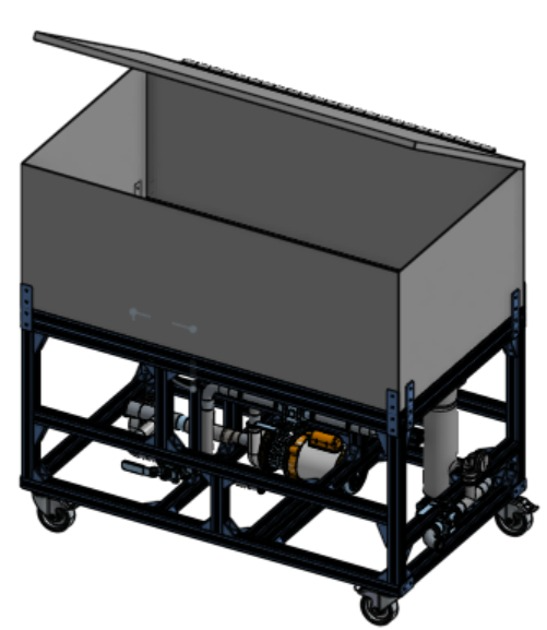
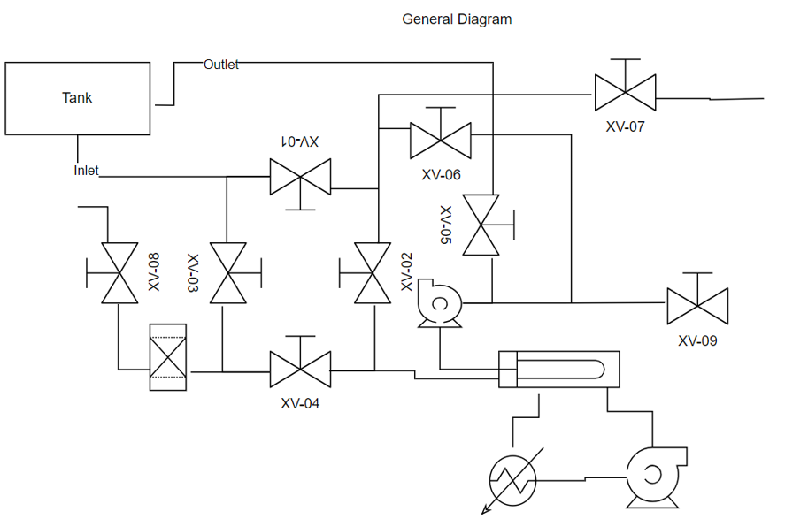
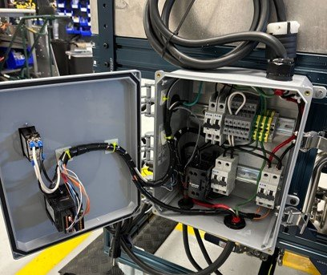
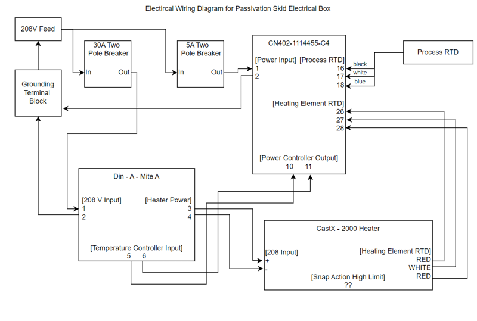
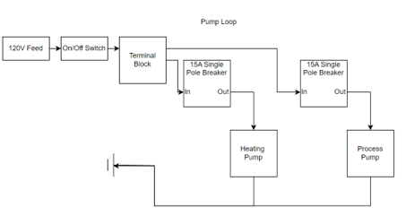

Featured project
In-house citric passivation system
ASTM A967 Citric 1. Built to replace an outsourced, pharmaceutical-grade passivation process with an in-house skid, cutting turnaround from weeks to days.

Goal
Electric Hydrogen previously outsourced citric passivation to a pharmaceutical-grade vendor with ISO certification, which was expensive and slow. The parts going through the process needed to work in two demanding environments at once: a Type 1 ultrapure water system and high-pressure hydrogen service. That meant the passivation process had to meet ASTM A967 Citric 1 without leaving any contamination or a surface that would fail under pressure.
I built an in-house system to replace the outsourced process. Turnaround dropped from weeks to a few days, and the cost savings paid for the skid many times over. It later became part of the standard manufacturing process, not just something used for test equipment.
Mechanical build
The system is built around a 185 gallon tank. I designed the tank weldment and sent it out for fabrication, along with the aluminum extrusion frame that supports it and the piping that ties the skid together. I ran engineering load calculations on both the tank weldment and the extrusion support to confirm the design would hold up under the actual use case. Every wetted component, from the tank to the fittings and flow paths, had to hold up chemically and thermally to the citric acid process without degrading or contaminating the parts being cleaned.

Electrical build
Heating comes from a 208VAC resistive element, run on its own independent loop with a shell-and-tube heat exchanger. That leaves room for an optional steam hookup if a larger batch needs more heating capacity than the resistive element alone can provide. A standalone PID controller manages the loop, and I wrote the program that runs it. I designed the full electrical schematic and control logic; the physical panel build was handled by a trained electrician, and I stayed only lightly involved in that part.



Testing and validation
Early testing was informal: fill the tank, run the pumps, and check for leaks. Once that passed, I ran the same test with the heating element active and cycled the temperature to confirm nothing leaked under heat.
Validating the actual passivation result took more than a visual check. I used a dedicated tester to confirm the passive layer had formed, backed by in-house SEM imaging to verify the chromium oxide layer directly, and sent samples to a third party to confirm the results independently. Over the course of validation, the process itself got faster too: total run time dropped from about 8 hours to roughly 5 as I found ways to tighten the steps.
Once validation was complete, I worked with the safety group to get the system approved for unattended operation. The only manual step left is loading materials, chemicals, and water.
← Back to portfolio